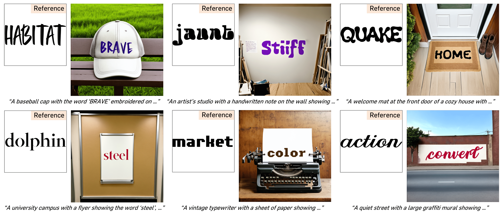
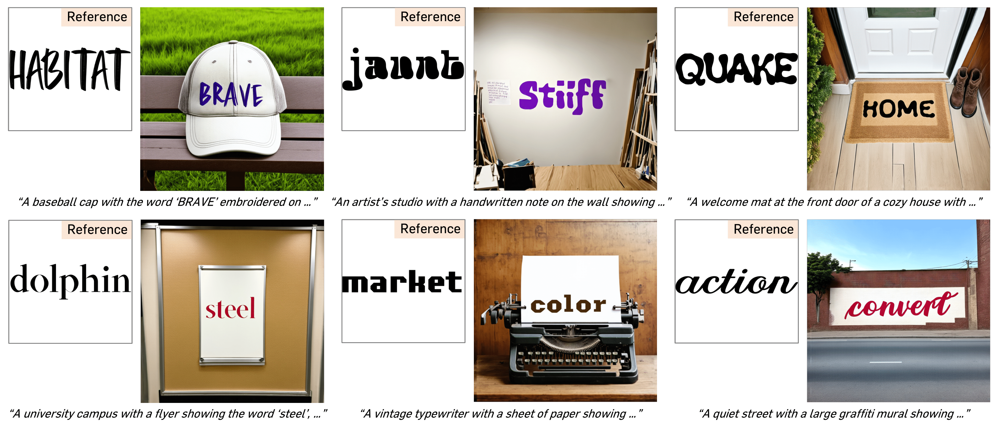

We present FontAdapter, a tuning-free framework that generates visual text in
any unseen fonts in a few seconds, conditioned on a reference glyph image.
Our approach is built upon the construction of synthetic datasets, leveraging large-scale
online fonts and realistic background images generated by a model. We propose a two-stage
training scheme tailored to the properties of our dataset: first learning font attributes
from isolated glyphs, then fine-tuning on scene-text images to integrate these styles within
diverse backgrounds. Our experiments show that FontAdapter achieves robust, high-quality
customization across diverse fonts without additional fine-tuning. Moreover, we
demonstrate various intriguing properties of FontAdapter, including cross-language
font transfer, font style blending, and visual text editing.
 
